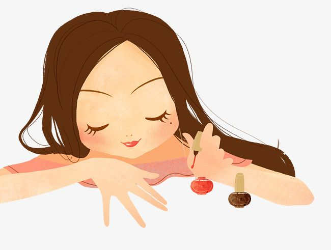
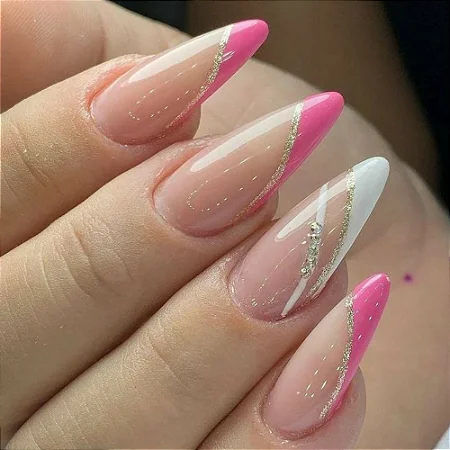
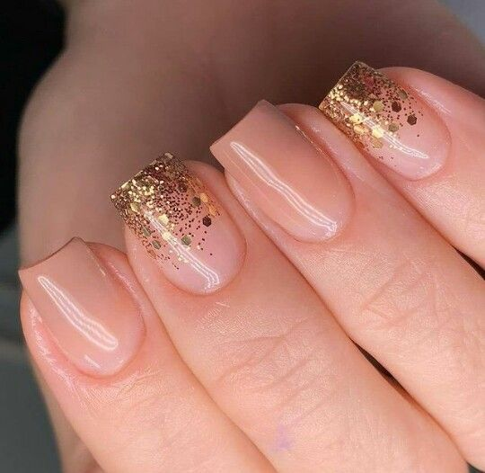
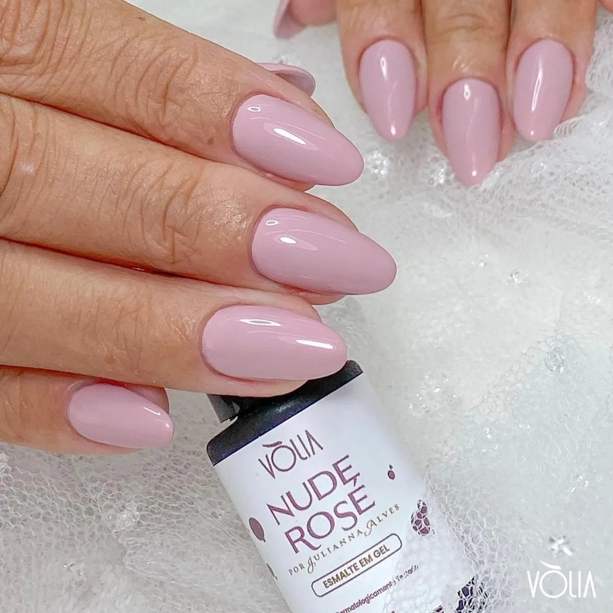

<!DOCTYPE html>
<html lang="pt-br">
  <head>
    <meta charset="UTF-8" />
    <meta name="viewport" content="width=device-width, initial-scale=1.0" />
    <link rel="stylesheet" href="style.css" />
    <title>Meu portfólio</title>
  </head>
  <body></body>
</html>
<body>
    
    <p>Eu sou Lais_</p>
    <h1>Eu sou nail designer</h1>
  </body>
  <body>
      Sou nail designer, faço unhas em geral, como alongamento de unhas, banho de gel, esmaltação em gel, etc. Busco melhorar a cada dia que passa!
    </p>
    <body>
        <p>Minhas habilidades:</p>
        <div>
          <p>Detalhista;</p>
          <p>Busco a perfeição e simetria;</p>
          <p>Educada;</p>
          <p>Prestativa.</p>
        </div>
      </body>
      <!DOCTYPE html>
<html lang="pt-br">

<head>
    <meta charset="UTF-8">
    <meta name="viewport" content="width=device-width, initial-scale=1.0">
    <link href="https://cdn.jsdelivr.net/npm/bootstrap@5.3.2/dist/css/bootstrap.min.css" rel="stylesheet">
    <link rel="stylesheet" href="style.css">
    <title>Meu portfólio</title>
</head>

<body>
    <header class="container text-center">
        _</p>
        <h1>Eu ensino Programação</h1>
        <p>Sou Engenheira de Computação e Pedagoga. Ensino pensamento computacional para estudantes do Ensino
            Fundamental e Médio. Ensino sobre pensamento computacional usando HTML, CSS e JavaScript. Veja os projetos
            que já desenvolvi!</p>
        <p>Minhas habilidades:</p>
        <div>
            <p class="badge bg-secondary">Alongamento unhas</p>
            <p class="badge bg-secondary">Banho de gel</p>
            <p class="badge bg-secondary">Blindagem</p>
            <p class="badge bg-secondary">Esmaltação em gel</p>
        </div>
    </header>
    <main class="container mt-5">
        <h2>Meus projetos</h2>
        <div class="row">
            <!-- Projeto 1 -->
            <div class="col-md-4">
                <div class="card">
                    
                    <div class="card-body">
                        <h5 class="card-title">Alongamento de unhas</h5>
                        <p class="card-text">O alongamento de unhas é considerado uma técnica muito utilizada pelas mulheres que têm dificuldade no fortalecimento e no crescimento das unhas naturais. Isso porque ela forma uma capa exterior que faz com que a aparência das estruturas fique mais longa e com o formato que a cliente deseja..
                        </p>
                        <button type="button" class="btn btn-link" data-bs-toggle="modal" data-bs-target="#modal1">Veja
                            o projeto</button>
                    </div>
                </div>
            </div>
            <!-- Projeto 2 -->
            <div class="col-md-4">
                <div class="card">
                    
                    <div class="card-body">
                        <h5 class="card-title">Banho de gel</h5>
                        <p class="card-text">O processo usa o gel — o mesmo usado para alongar as unhas — em aplicação apenas por cima do formato natural, criando uma camada rígida e resistente que protege a parte natural de quebras.</p>
                        <button type="button" class="btn btn-link" data-bs-toggle="modal" data-bs-target="#modal2">Veja
                            o projeto</button>
                    </div>
                </div>
            </div>

            <!-- Projeto 3 -->
            <div class="col-md-4">
                <div class="card">
                    
                    <div class="card-body">
                        <h5 class="card-title">Esmaltação em gel
                        </h5>
                        <p class="card-text">EEste projeto Scratch cria uma experiência interativa educativa sobre
                            astronomia, permitindo aos usuários explorar informações sobre constelações, eclipses, e a
                            forma da Terra através de cenários dinâmicos e diálogos informativos.
                        </p>
                        <button type="button" class="btn btn-link" data-bs-toggle="modal" data-bs-target="#modal3">Veja
                            o projeto</button>
                    </div>
                </div>
            </div>
        </div>
    </main>

    <!-- Modal 1 -->
    <div class="modal" id="modal1" tabindex="-1">
        <div class="modal-dialog">
            <div class="modal-content">
                <div class="modal-header">
                    <h5 class="modal-title">Minha Biblioteca: Uma Webpage Personalizada</h5>
                    <button type="button" class="btn-close" data-bs-dismiss="modal" aria-label="Close"></button>
                </div>
                <div class="modal-body">
                    <p>O projeto é uma página web criada com HTML e CSS, destinada a exibir uma coleção pessoal de
                        livros favoritos. O objetivo é criar um ambiente virtual onde seja possível compartilhar
                        seus livros preferidos, fornecendo uma descrição breve de cada um, incluindo o autor, o ano
                        de publicação e uma opção de compra.</p>
                    <p>A estrutura do site é baseada em HTML, que define a semântica e o layout do conteúdo,
                        enquanto o CSS é usado para estilizar a página visualmente, incluindo cores, tipografia e a
                        disposição dos elementos.</p>
                    <p>O HTML organiza o conteúdo em um cabeçalho com o título do site, seguido por uma divisão
                        principal (.container) que apresenta o propósito do site e a coleção de livros em uma seção
                        flexível (.livros). Cada livro é destacado em seu próprio contêiner (.livro), mostrando uma
                        imagem da capa, detalhes do livro e um link de compra. O design responsivo é garantido pelo
                        uso de uma meta tag viewport e um layout flexível que se adapta a diferentes tamanhos de
                        tela.</p>
                    <p>O CSS personaliza o visual do site, usando variáveis para cores, estilizando o texto com uma
                        fonte importada do Google Fonts e aplicando um esquema de cores suaves e botões interativos.
                        O uso de HTML e CSS é importante pois assim é possível criar um site acessível e
                        esteticamente agradável sem a necessidade de scripts complexos, com foco na usabilidade e na
                        experiência da pessoa usuária. A escolha da tipografia e do esquema de cores contribui para
                        a atmosfera acolhedora do site, incentivando a exploração da coleção de livros.</p>
                    
                </div>
                <div class="modal-footer">
                    <a href="https://femascheti.github.io/minhas-leituras/">Ver projeto ao vivo</a>
                    <a href="https://github.com/femascheti/minhas-leituras">Ver código do projeto</a>
                </div>
            </div>
        </div>
    </div>

    <footer class="container py-5">
        <h2>Entre em contato</h2>
        <div>
            <a href="https://github.com/femascheti">GitHub</a>
        </div>
        <p class="my-5 text-center">© Copyright 2024. Produzido por Fernanda Mascheti</p>
    </footer>

    <script src="https://cdn.jsdelivr.net/npm/bootstrap@5.3.2/dist/js/bootstrap.bundle.min.js"></script>
</body>

</html>